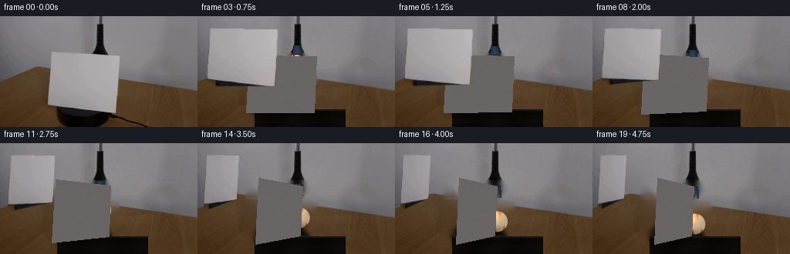
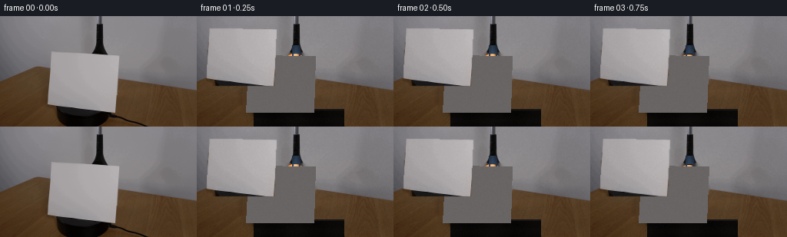

CODING AGENTS AS PIXEL WORLD MODELS
traex/DeepSeek-V4.1-Flash · 0006
点击播放 · 原生 RGB 像素
逐轮保存的候选
回放视频、检查图与代码变化。
每份候选均可单独播放。实际图片检查记录在下方工具轨迹中。
候选 01播放与检查图
点击播放 · 原生 RGB 像素


展开代码变化
--- 上一保存版本
+++ 本次保存版本
@@ -0,0 +1,339 @@
+from pathlib import Path
+
+import cv2
+import numpy as np
+from PIL import Image
+
+import artifact_io
+
+
+ROOT = Path(__file__).resolve().parent
+W, H = 256, 144
+N = 20
+FPS = 4
+
+
+def smoothstep(x):
+ x = np.clip(x, 0.0, 1.0)
+ return x * x * (3.0 - 2.0 * x)
+
+
+def make_background(first):
+ """Remove the sheet and reconstruct the table/wall it hides."""
+ image = first.astype(np.float32).copy()
+
+ # The board is the large light-gray plane standing on the platform.
+ board_poly = np.array(
+ [[64, 47], [156, 48], [152, 126], [59, 126]], dtype=np.int32
+ )
+ board_mask = np.zeros((H, W), dtype=np.uint8)
+ cv2.fillPoly(board_mask, [board_poly], 255)
+ board_mask = cv2.dilate(board_mask, np.ones((3, 3), np.uint8), iterations=1)
+
+ # Inpainting gives a smooth tabletop behind the board. A small amount of
+ # sampled grain restores the wood character lost by the inpainter.
+ bgr = cv2.cvtColor(first, cv2.COLOR_RGB2BGR)
+ inpainted = cv2.inpaint(bgr, board_mask, 8, cv2.INPAINT_TELEA)
+ image = cv2.cvtColor(inpainted, cv2.COLOR_BGR2RGB).astype(np.float32)
+
+ rng = np.random.default_rng(17)
+ fine = cv2.GaussianBlur(rng.normal(0.0, 1.0, (H, W)).astype(np.float32), (0, 0), 0.8)
+ wood = cv2.GaussianBlur(rng.normal(0.0, 1.0, (H, W)).astype(np.float32), (0, 0), 3.0)
+ grain = 1.8 * fine + 2.2 * wood
+ image += grain[:, :, None] * np.array([1.0, 0.62, 0.32], dtype=np.float32)
+
+ # Repair the platform's top edge where the inpainter crossed the board.
+ yy, xx = np.mgrid[0:H, 0:W]
+ platform = (yy >= 121) & (xx >= 74) & (xx <= 191)
+ if np.any(platform):
+ base = np.array([10.0, 9.0, 8.0], dtype=np.float32)
+ local = 2.0 * np.sin(xx * 0.11) + 1.2 * np.cos(yy * 0.37)
+ image[platform] = base + local[platform, None] * np.array([1.0, 0.92, 0.8])
+ top = (yy >= 119) & (yy <= 122) & (xx >= 74) & (xx <= 191)
+ image[top] = np.maximum(
+ image[top], np.array([24.0, 23.0, 22.0], dtype=np.float32)
+ )
+
+ return np.clip(image, 0.0, 255.0)
+
+
+def quad_from_angle(theta, calibrate=True):
+ """Project a vertical rectangular sheet rotating clockwise around its axis."""
+ # Normalized board coordinates: u is horizontal, v is vertical.
+ u = np.array([-0.5, 0.5, 0.5, -0.5], dtype=np.float64)
+ v = np.array([-0.5, -0.5, 0.5, 0.5], dtype=np.float64)
+ cx, cy = 108.0, 87.0
+ sx, sy = 88.0, 74.0
+ perspective = 2.85
+ depth = 1.0 + u * np.sin(theta) / perspective
+ px = cx + sx * u * np.cos(theta) / depth
+ py = cy + sy * v / depth
+ ideal = np.stack([px, py], axis=1)
+
+ # A fixed calibration matches the slightly skewed board in frame 0.
+ q0 = np.array([[66, 50], [153, 51], [150, 124], [62, 124]], dtype=np.float64)
+ if calibrate:
+ ideal0 = np.array([[64, 50], [152, 50], [152, 124], [64, 124]], dtype=np.float64)
+ hmat = cv2.getPerspectiveTransform(ideal0.astype(np.float32), q0.astype(np.float32))
+ pts = np.concatenate([ideal, np.ones((4, 1))], axis=1)
+ proj = (hmat @ pts.T).T
+ ideal = proj[:, :2] / proj[:, 2:3]
+ return ideal.astype(np.float32)
+
+
+def board_source(first):
+ """Extract the sheet with an antialiased alpha matte."""
+ src_quad = np.array([[66, 50], [153, 51], [150, 124], [62, 124]], dtype=np.float32)
+ x0, y0 = 54, 42
+ x1, y1 = 162, 132
+ crop = first[y0:y1, x0:x1].astype(np.float32)
+ alpha = np.zeros((y1 - y0, x1 - x0), dtype=np.float32)
+ poly = np.round(src_quad - np.array([x0, y0])).astype(np.int32)
+ cv2.fillPoly(alpha, [poly], 1.0)
+ alpha = cv2.GaussianBlur(alpha, (0, 0), 0.55)
+ return crop, alpha, src_quad - np.array([x0, y0], dtype=np.float32)
+
+
+def warp_board(first, theta, frame_index):
+ crop, alpha, src_quad = board_source(first)
+ dst_quad = quad_from_angle(theta)
+ offset = np.array([52, 38], dtype=np.int32)
+ src = src_quad - np.array([54, 42], dtype=np.float32)
+ dst = dst_quad - offset
+ mat = cv2.getPerspectiveTransform(src.astype(np.float32), dst.astype(np.float32))
+
+ out_w = W + 80
+ out_h = H + 80
+ warped = cv2.warpPerspective(
+ crop,
+ mat,
+ (out_w, out_h),
+ flags=cv2.INTER_LINEAR,
+ borderMode=cv2.BORDER_CONSTANT,
+ borderValue=(0, 0, 0),
+ )
+ warped_alpha = cv2.warpPerspective(
+ alpha,
+ mat,
+ (out_w, out_h),
+ flags=cv2.INTER_LINEAR,
+ borderMode=cv2.BORDER_CONSTANT,
+ borderValue=0,
+ )
+
+ # The face becomes a little dimmer and cooler as it turns away.
+ turn = np.sin(theta)
+ yy, xx = np.mgrid[0:out_h, 0:out_w]
+ local_x = (xx - (108.0 - offset[0])) / 70.0
+ light = 1.0 - 0.11 * turn + 0.035 * local_x * np.cos(theta)
+ warped *= light[:, :, None]
+ warped[..., 2] *= 1.0 + 0.018 * turn
+
+ # A narrow side gives the sheet a visible thickness.
+ side = dst_quad.copy()
+ side[:, 0] += 1.5
+ side[:, 1] += 0.8
+ side_mask = np.zeros((H, W), dtype=np.uint8)
+ cv2.fillPoly(side_mask, [np.round(side).astype(np.int32)], 255)
+ side_rgb = np.zeros((H, W, 3), dtype=np.float32)
+ side_rgb[:] = np.array([105.0, 101.0, 100.0], dtype=np.float32)
+
+ return warped, warped_alpha, side_rgb, side_mask, dst_quad
+
+
+def composite_board(frame, first, theta):
+ warped, alpha, side_rgb, side_mask, dst_quad = warp_board(first, theta, 0)
+ offset = np.array([52, 38], dtype=np.float32)
+
+ # Shadow on the platform/table, kept soft and close to the base.
+ shadow = np.zeros((H, W), dtype=np.float32)
+ bottom = dst_quad[2:4].copy()
+ center = bottom.mean(axis=0)
+ cv2.ellipse(
+ shadow,
+ (int(round(center[0])), int(round(center[1] + 2))),
+ (max(13, int(round(abs(bottom[1, 0] - bottom[0, 0]) * 0.55))), 5),
+ 0,
+ 0,
+ 360,
+ 1.0,
+ -1,
+ )
+ shadow = cv2.GaussianBlur(shadow, (0, 0), 4.0)
+ frame *= (1.0 - 0.18 * shadow[:, :, None])
+
+ # Thickness layer, then the visible face.
+ frame = frame * (1.0 - side_mask[..., None] / 255.0) + side_rgb * (side_mask[..., None] / 255.0)
+
+ canvas = np.zeros((H + 80, W + 80, 3), dtype=np.float32)
+ ox, oy = int(offset[0]), int(offset[1])
+ canvas[oy : oy + H, ox : ox + W] = frame
+ a = alpha[oy : oy + H, ox : ox + W, None]
+ warped_crop = warped[oy : oy + H, ox : ox + W]
+ region = canvas[
+ oy : oy + H, ox : ox + W
+ ]
+ region[:] = region * (1.0 - a) + warped_crop * a
+ return np.clip(canvas[oy : oy + H, ox : ox + W], 0, 255)
+
+
+def render_ball(first, center, radius, spin):
+ """Analytic shaded tennis ball with felt and two seam curves."""
+ cx, cy = center
+ pad = radius + 4
+ x0 = max(0, int(np.floor(cx - pad)))
+ x1 = min(W, int(np.ceil(cx + pad + 1)))
+ y0 = max(0, int(np.floor(cy - pad)))
+ y1 = min(H, int(np.ceil(cy + pad + 1)))
+ yy, xx = np.mgrid[y0:y1, x0:x1]
+ dx = (xx + 0.5 - cx) / radius
+ dy = (yy + 0.5 - cy) / radius
+ rr = dx * dx + dy * dy
+ inside = rr <= 1.0
+ zz = np.sqrt(np.clip(1.0 - rr, 0.0, 1.0))
+
+ light = np.array([-0.52, -0.66, 0.55], dtype=np.float32)
+ light /= np.linalg.norm(light)
+ half = (light + np.array([0.0, 0.0, 1.0], dtype=np.float32))
+ half /= np.linalg.norm(half)
+ ndotl = np.clip(dx * light[0] + dy * light[1] + zz * light[2], 0.0, 1.0)
+ ndoth = np.clip(dx * half[0] + dy * half[1] + zz * half[2], 0.0, 1.0)
+
+ base = np.array([219.0, 105.0, 31.0], dtype=np.float32)
+ shade = 0.38 + 0.72 * ndotl
+ color = base[None, None, :] * shade[:, :, None]
+ color += np.array([42.0, 25.0, 5.0])[None, None, :] * (ndotl ** 2)[:, :, None]
+ color += np.array([110.0, 82.0, 43.0])[None, None, :] * (ndoth ** 18)[:, :, None]
+
+ # Felt texture is coherent over the visible surface.
+ rng = np.random.default_rng(101)
+ noise = rng.normal(0.0, 1.0, color.shape[:2]).astype(np.float32)
+ noise = cv2.GaussianBlur(noise, (0, 0), 0.55)
+ color *= (1.0 + 0.035 * noise[:, :, None])
+
+ # Two projected seam arcs, with a darker edge under the pale felt line.
+ phase = spin
+ curve1 = 0.43 * np.sin(2.35 * np.pi * dx + phase) + 0.04
+ curve2 = -0.43 * np.sin(2.35 * np.pi * dx + phase + 1.1) - 0.05
+ seam1 = np.abs(dy - curve1)
+ seam2 = np.abs(dy - curve2)
+ seam = np.minimum(seam1, seam2)
+ seam_alpha = np.clip((1.15 - seam) / 0.72, 0.0, 1.0)
+ seam_alpha *= np.clip((1.0 - rr) / 0.12, 0.0, 1.0)
+ seam_alpha *= inside
+ seam_color = np.array([238.0, 226.0, 191.0], dtype=np.float32)
+ color = color * (1.0 - 0.68 * seam_alpha[:, :, None]) + seam_color * (
+ 0.68 * seam_alpha[:, :, None]
+ )
+
+ # Contact shade at the lower rim.
+ rim = np.clip((rr - 0.78) / 0.22, 0.0, 1.0)
+ color *= (1.0 - 0.23 * rim[:, :, None])
+ alpha = inside.astype(np.float32)
+ alpha *= np.clip((1.0 - rr) / 0.045, 0.0, 1.0)
+ alpha = cv2.GaussianBlur(alpha, (0, 0), 0.45)
+ return x0, y0, np.clip(color, 0, 255), alpha
+
+
+def draw_ball(frame, center, radius, spin):
+ x0, y0, color, alpha = render_ball(frame, center, radius, spin)
+ x1 = x0 + color.shape[1]
+ y1 = y0 + color.shape[0]
+ region = frame[y0:y1, x0:x1]
+ a = alpha[..., None]
+ region[:] = region * (1.0 - a) + color * a
+
+ # Soft contact shadow, useful when the ball settles on the platform.
+ shadow = np.zeros((H, W), dtype=np.float32)
+ cv2.ellipse(
+ shadow,
+ (int(round(center[0])), int(round(center[1] + radius * 0.75))),
+ (int(radius * 0.85), max(2, int(radius * 0.22))),
+ 0,
+ 0,
+ 360,
+ 1.0,
+ -1,
+ )
+ shadow = cv2.GaussianBlur(shadow, (0, 0), 2.6)
+ frame *= (1.0 - 0.25 * shadow[:, :, None])
+
+
+def draw_gripper(frame, x, end_y, alpha=1.0):
+ """Blue-black jaws descending from the existing top rod."""
+ x = float(x)
+ end_y = float(end_y)
+ if alpha <= 0.01:
+ return
+ # Main small block under the rod.
+ y0 = max(0, int(round(end_y - 13)))
+ y1 = min(H, int(round(end_y + 4)))
+ if y1 <= y0:
+ return
+ yy, xx = np.mgrid[y0:y1, 0:W]
+ mask = np.zeros((y1 - y0, W), dtype=np.float32)
+ block = (xx >= x - 5.5) & (xx <= x + 5.5) & (yy <= end_y - 3)
+ mask[block] = 1.0
+ left_jaw = (yy >= end_y - 8) & (yy <= end_y + 2) & (np.abs(xx - (x - 4.5)) <= 1.4)
+ right_jaw = (yy >= end_y - 8) & (yy <= end_y + 2) & (np.abs(xx - (x + 4.5)) <= 1.4)
+ mask[left_jaw | right_jaw] = 1.0
+ mask = cv2.GaussianBlur(mask, (0, 0), 0.42) * alpha
+
+ col = np.zeros((y1 - y0, W, 3), dtype=np.float32)
+ rel = np.clip((xx - (x - 6)) / 12.0, 0.0, 1.0)
+ col[:] = np.array([21.0, 28.0, 40.0], dtype=np.float32)
+ col += (np.array([48.0, 67.0, 88.0]) - np.array([21.0, 28.0, 40.0]))[
+ None, None, :
+ ] * (0.22 + 0.55 * (1.0 - np.abs(rel - 0.45) * 2.0))[:, :, None]
+ col += np.array([12.0, 17.0, 24.0])[None, None, :] * np.clip(
+ (yy - (end_y - 13)) / 13.0, 0.0, 1.0
+ )[:, :, None]
+ region = frame[y0:y1]
+ a = mask[..., None]
+ region[:] = region * (1.0 - a) + col * a
+
+
+def add_film_grain(frame, seed):
+ rng = np.random.default_rng(seed)
+ n = rng.normal(0.0, 1.0, (H, W)).astype(np.float32)
+ n = cv2.GaussianBlur(n, (0, 0), 0.45)
+ frame += n[:, :, None] * 1.25
+ return frame
+
+
+def generate():
+ first = np.asarray(Image.open(ROOT / "first_frame.png").convert("RGB"), dtype=np.uint8)
+ assert first.shape == (H, W, 3)
+ background = make_background(first)
+ frames = np.empty((N, H, W, 3), dtype=np.uint8)
+ frames[0] = first
+
+ for i in range(1, N):
+ t = (i - 1) / (N - 2)
+ move = smoothstep(t)
+ # Keep the first moments quiet, then let the sheet turn through its
+ # vertical axis while the ball is lowered behind it.
+ action = smoothstep((t - 0.08) / 0.84)
+ theta = np.deg2rad(58.0) * action
+
+ frame = background.copy()
+ ball_x = 128.0 + 5.0 * action
+ ball_y = 62.0 + 43.0 * move
+ ball_radius = 14.0
+ draw_ball(frame, (ball_x, ball_y), ball_radius, spin=1.1 * action)
+
+ # The jaws start just under the fixed rod and disappear behind the
+ # sheet as they descend.
+ gripper_end = 51.0 + 18.0 * action
+ draw_gripper(frame, 129.0 + 2.2 * action, gripper_end, alpha=1.0)
+
+ frame = composite_board(frame, first, theta)
+ frame = add_film_grain(frame, 300 + i)
+ frames[i] = np.clip(frame, 0.0, 255.0).astype(np.uint8)
+
+ artifact_io.save(frames, ROOT)
+ return frames
+
+
+if __name__ == "__main__":
+ generate()
候选 02播放与检查图
点击播放 · 原生 RGB 像素

展开代码变化
代码未变化；重新保存了产物。
可观测工具轨迹
实际执行的命令与返回图片。
命令 1exit 0
/bin/bash -c "pwd && rg --files -g '"'!*.mp4'"' -g '"'!*.mov'"' | sort"
命令 2exit 0
/bin/bash -c 'cat prompt.txt'
命令 3exit 0
/bin/bash -c 'cat GENERATION_RULES.md'
命令 4exit 0
/bin/bash -c "sed -n '1,240p' artifact_io.py"
命令 5exit 0
/bin/bash -c "sed -n '1,220p' player_template.html"
命令 6exit 0
/bin/bash -c "python3 - <<'PY'
from PIL import Image
import numpy as np
im=Image.open('first_frame.png').convert('RGB')
a=np.asarray(im)
print(im.size, a.shape, a.dtype)
print('min/max/mean',a.min(axis=(0,1)),a.max(axis=(0,1)),a.mean(axis=(0,1)))
for y,x in [(0,0),(72,128),(143,255),(100,128)]: print(y,x,a[y,x])
PY"命令 7exit 0
/bin/bash -c "python3 - <<'PY'
from PIL import Image
import numpy as np
from collections import Counter
im=np.asarray(Image.open('first_frame.png').convert('RGB'))
# quantize 16 steps
q=(im//16)*16
c=Counter(map(tuple,q.reshape(-1,3)))
for col,n in c.most_common(25): print(col,n,round(n/(144*256)*100,2))
PY"命令 8exit 0
/bin/bash -c "python3 - <<'PY'
from PIL import Image
import numpy as np
a=np.asarray(Image.open('first_frame.png').convert('RGB')).astype(int)
r,g,b=a[:,:,0],a[:,:,1],a[:,:,2]
conds={
'orange':(r>g*1.25)&(g>b*1.2)&(r>70),
'blue':(b>r*1.25)&(b>g*1.05)&(b>45),
'dark':(r+g+b<90),
'wood':(r>g*1.15)&(g>b*1.1)&(r>45),
'bright':(r+g+b>450),
'green?':(g>r*1.15)&(g>b*1.1),
}
for name,m in conds.items():
ys,xs=np.where(m)
print(name,len(xs), (xs.min(),ys.min(),xs.max(),ys.max()) if len(xs) else None)
print(' row top', sorted([(int((ys==y).sum()),y) for y in np.unique(ys)], reverse=True)[:8])
print(' col top', sorted([(int((xs==x).sum()),x) for x in np.unique(xs)], reverse=True)[:8])
PY"命令 9exit 1
/bin/bash -c "python3 - <<'PY'
from PIL import Image
import numpy as np
a=np.asarray(Image.open('first_frame.png').convert('RGB')).astype(float)
# 64x36 block means; classify by hue/value
for yy in range(0,144,4):
s=''
for xx in range(0,256,4):
p=a[yy:yy+4,xx:xx+4].mean(0); r,g,b=p
mx=max(p); mn=min(p); d=mx-mn
if mx<30: c=' '
elif r>g*1.30 and g>b*1.18: c='O' if r>100 else 'o'
elif b>r*1.20 and b>g*1.02: c='B'
elif d<8: c='#' if mx>180 else ('=' if mx>140 else ('+' if mx>95 else ('.' if mx>50 else ',')))
elif r>g*1.08 and g>b*1.08: c='W' if mx>140 else 'w'
elif b>r*1.04 and b>g*1.02: c='P' if mx>120 else 'p'
else: c='x'
s+=c
print(f'{yy:3d} '+s)
PY"命令 10exit 0
/bin/bash -c "python3 - <<'PY'
from PIL import Image
import numpy as np
a=np.asarray(Image.open('first_frame.png').convert('RGB')).astype(float)
for yy in range(0,144,4):
s=''
for xx in range(0,256,4):
r,g,b=a[yy:yy+4,xx:xx+4].mean((0,1))
mx=max(r,g,b); mn=min(r,g,b); d=mx-mn
if mx<30: c=' '
elif r>g*1.30 and g>b*1.18: c='O' if r>100 else 'o'
elif b>r*1.20 and b>g*1.02: c='B'
elif d<8: c='#' if mx>180 else ('=' if mx>140 else ('+' if mx>95 else ('.' if mx>50 else ',')))
elif r>g*1.08 and g>b*1.08: c='W' if mx>140 else 'w'
elif b>r*1.04 and b>g*1.02: c='P' if mx>120 else 'p'
else: c='x'
s+=c
print(f'{yy:3d} '+s)
PY"命令 11exit 0
/bin/bash -c "python3 - <<'PY'
from PIL import Image
import numpy as np
a=np.asarray(Image.open('first_frame.png').convert('RGB'))
for y in range(0,144,8):
print('y',y, ' '.join('%3d,%3d,%3d'%tuple(a[y,x]) for x in range(0,256,16)))
PY"命令 12exit 0
/bin/bash -c "python3 - <<'PY'
try:
import cv2; print('cv2',cv2.__version__)
except Exception as e: print('no cv2',e)
try:
import scipy; print('scipy',scipy.__version__)
except Exception as e: print('no scipy',e)
PY"命令 13exit 0
/bin/bash -c "python3 - <<'PY'
from PIL import Image
import numpy as np
a=np.asarray(Image.open('first_frame.png').convert('RGB')).astype(float)
r,g,b=a[:,:,0],a[:,:,1],a[:,:,2]
# print edge profiles via variance/gradients
lum=a.mean(2); gx=np.abs(np.diff(lum,axis=1)); gy=np.abs(np.diff(lum,axis=0))
print('top gx columns', sorted([(round(gx[:,x].mean(),2),x) for x in range(255)], reverse=True)[:30])
print('top gy rows', sorted([(round(gy[y].mean(),2),y) for y in range(143)], reverse=True)[:30])
# orange robust rows/cols extents
m=(r>g+15)&(g>b+15)&(r>65)
for y in range(60,144):
xs=np.where(m[y])[0]
if len(xs)>5: print(y,int(xs.min()),int(xs.max()),len(xs))
PY"命令 14exit 0
/bin/bash -c "python3 - <<'PY'
from PIL import Image
import numpy as np
a=np.asarray(Image.open('first_frame.png').convert('RGB')).astype(float)
r,g,b=a[:,:,0],a[:,:,1],a[:,:,2]
# print RGB grid 4px with chars specifically color classes
for yy in range(48,144,4):
s=''
for xx in range(0,256,4):
r0,g0,b0=a[yy:yy+4,xx:xx+4].mean((0,1)); mx=max(r0,g0,b0)
if r0>g0*1.2 and g0>b0*1.15: c='O'
elif b0>r0*1.15: c='B'
elif mx>175: c='#'
elif mx>155: c='='
elif mx>130: c='+'
elif mx>95: c='-'
elif mx>60: c='.'
else: c=','
s+=c
print(f'{yy:3d} '+s)
PY"命令 15exit 0
/bin/bash -c "python3 - <<'PY'
from PIL import Image
import numpy as np
a=np.asarray(Image.open('first_frame.png').convert('RGB')).astype(float)
r,g,b=a[:,:,0],a[:,:,1],a[:,:,2]
# inspect pixels that are bluish/dark or orange in central region
for y in [45,50,55,60,65,70,75,80,85,90,95,100,105,110,115,120,125,130,135,140]:
print('\\ny',y)
for x in range(0,256,8):
rr,gg,bb=a[y:y+1,x:x+1][0,0].astype(int)
print('%3d,%3d,%3d'%(rr,gg,bb),end=' | ')
print()
PY"命令 16exit 0
/bin/bash -c "python3 - <<'PY'
from PIL import Image
import numpy as np
a=np.asarray(Image.open('first_frame.png').convert('RGB'))
for y in [0,20,40,48,49,50,60,70,80,90,100,110,120,121,122,123,124,125,130,140,143]:
print('y',y,' '.join('%d:%d,%d,%d'%((x,)+tuple(a[y,x])) for x in [55,58,60,61,62,63,64,65,66,67,70,120,121,122,123,124,125,126,127,128,129,130,131,132,133,134,135,136,137,138,140,145,150,152,153,154,155]))
PY"命令 17exit 0
/bin/bash -c "python3 - <<'PY'
from PIL import Image
import numpy as np
a=np.asarray(Image.open('first_frame.png').convert('RGB')).astype(float)
r,g,b=a[:,:,0],a[:,:,1],a[:,:,2]
# blue/black grabber detection (central column 120-140) print x extents by y
m=(b>r+10)&(b>g+4)&(b>30)
print('blue-ish')
for y in range(0,100):
xs=np.where(m[y])[0]
if len(xs)>1: print(y,int(xs.min()),int(xs.max()),len(xs))
PY"命令 18exit 0
/bin/bash -c "python3 - <<'PY'
from PIL import Image
import numpy as np
a=np.asarray(Image.open('first_frame.png').convert('RGB')).astype(int)
# each pixel's closest palette manually from sampled clusters
pal=np.array([[140,138,141],[120,118,121],[90,88,92],[167,163,164],[175,171,172],[85,62,38],[15,13,13],[175,170,171]],float)
d=((a[:,:,None,:]-pal[None,None,:,:])**2).sum(3)
lab=d.argmin(2); md=d.min(2)
for yy in range(0,144,4):
s=''
for xx in range(0,256,4):
vals,cnts=np.unique(lab[yy:yy+4,xx:xx+4],return_counts=True); v=vals[cnts.argmax()]
s+=' 1234567 '[v] if md[yy:yy+4,xx:xx+4].mean()<500 else '?'
print(f'{yy:3d} '+s)
PY"命令 19exit 0
/bin/bash -c "python3 - <<'PY'
from PIL import Image
import numpy as np
a=np.asarray(Image.open('first_frame.png').convert('RGB')).astype(float)
r,g,b=a[:,:,0],a[:,:,1],a[:,:,2]
# likely cardstock is gray region x~63-151 y~50-125. determine exact bounds by brightness threshold
for y in [45,46,47,48,49,50,51,52,53,54,55,56,60,70,80,90,100,110,120,121,122,123,124,125,126,127,128,130,135,140]:
xs=np.where((a[y].mean(1)>135)&(np.ptp(a[y],axis=1)<20))[0]
# runs >10
runs=[]
if len(xs):
s=xs[0];p=xs[0]
for x in xs[1:]:
if x>p+1:
if p-s>8:runs.append((s,p))
s=x
p=x
if p-s>8:runs.append((s,p))
print(y,runs)
PY"命令 20exit 0
/bin/bash -c "python3 - <<'PY'
from PIL import Image
import numpy as np
a=np.asarray(Image.open('first_frame.png').convert('RGB')).astype(float)
# sample central region line profiles at x 130,135,140,145,150,155,160,170,180,190,200,210
for x in [125,130,135,140,145,150,155,160,165,170,180,190,200,210,220,230]:
print('\\nx',x)
for y in range(0,144,4): print('%3d:%3d,%3d,%3d'%((y,)+tuple(a[y,x].astype(int))),end=' | ')
print()
PY"命令 21exit 0
/bin/bash -c "python3 - <<'PY'
from PIL import Image
import numpy as np
a=np.asarray(Image.open('first_frame.png').convert('RGB')).astype(float)
# Create ascii of mask by saturation/brightness, 2 px resolution, central scene
for yy in range(0,144,2):
s=''
for xx in range(0,256,2):
p=a[yy:yy+2,xx:xx+2].mean((0,1)); r,g,b=p; mx=p.max(); mn=p.min()
if r>g+8 and g>b+8:
c='O' if mx>110 else 'o'
elif b>r+8 and b>g+4: c='B'
elif mx<28: c='@'
elif mx<55: c='X'
elif mx<85: c='x'
elif mx<115: c='-'
elif mx<140: c='.'
elif mx<165: c='+'
elif mx<185: c='='
else: c='#'
s+=c
print(s)
PY"命令 22exit 0
/bin/bash -c "python3 - <<'PY'
from PIL import Image
import numpy as np
a=np.asarray(Image.open('first_frame.png').convert('RGB')).astype(float)
# approximate cardstock quadrilateral mask based on gray color and region. print boundary x for rows.
for y in range(44,130):
x=np.arange(256); p=a[y]; r,g,b=p[:,0],p[:,1],p[:,2]
m=(r>130)&(abs(r-g)<20)&(abs(g-b)<20)
xs=np.where(m)[0]
# restrict central x 60:205 and find runs
xs=xs[(xs>=58)&(xs<=205)]
runs=[]
if len(xs):
st=pr=xs[0]
for x in xs[1:]:
if x>pr+1:
if pr-st>8:runs.append((st,pr))
st=x
pr=x
if pr-st>8:runs.append((st,pr))
print(y,runs)
PY"命令 23exit 0
/bin/bash -c "python3 - <<'PY'
from PIL import Image
import numpy as np
a=np.asarray(Image.open('first_frame.png').convert('RGB')).astype(float)
# print rows of color sampled at center in compact spans to infer base geometry
for y in [0,10,20,30,40,48,50,55,60,65,70,75,80,85,90,95,100,105,110,115,120,125,130,140,143]:
p=a[y]; r,g,b=p[:,0],p[:,1],p[:,2]
# identify transitions based on nearest known
print('row',y)
for x in range(0,256,32):
print(x, tuple(p[x].astype(int)), end='; ')
print()
PY"命令 24exit 0
/bin/bash -c "python3 - <<'PY'
from PIL import Image
import numpy as np, cv2
a=np.asarray(Image.open('first_frame.png').convert('RGB'))
r,g,b=a[:,:,0].astype(int),a[:,:,1].astype(int),a[:,:,2].astype(int)
for thr in [(10,10),(20,15),(30,20)]:
m=((r>g+thr[0])&(g>b+thr[1])&(r>50)).astype(np.uint8)
m[83:]=0
n,lab,stats,cents=cv2.connectedComponentsWithStats(m,8)
print('thr',thr)
for i in range(1,n):
x,y,w,h,area=stats[i]
if area>10: print(i,(x,y,w,h,area),cents[i])
PY"命令 25exit 0
/bin/bash -c "python3 - <<'PY'
from PIL import Image
import numpy as np, cv2
a=np.asarray(Image.open('first_frame.png').convert('RGB')).astype(int)
r,g,b=a[:,:,0],a[:,:,1],a[:,:,2]
# Try circle detection on Canny and Hough
gray=cv2.cvtColor(a.astype(np.uint8),cv2.COLOR_RGB2GRAY)
cs=cv2.HoughCircles(gray,cv2.HOUGH_GRADIENT,1.0,10,param1=80,param2=15,minRadius=5,maxRadius=35)
print(cs)
# edges sample in orange region
PY"命令 26exit 0
/bin/bash -c "python3 - <<'PY'
from PIL import Image
import numpy as np
a=np.asarray(Image.open('first_frame.png').convert('RGB')).astype(float)
# print grayscale / color of orange pixels and spatial distribution around ball
r,g,b=a[:,:,0],a[:,:,1],a[:,:,2]
m=(r>g+10)&(g>b+10)&(r>50)&(np.indices(r.shape)[0]<84)
for y in range(62,84):
xs=np.where(m[y])[0]
if len(xs): print(y,xs.min(),xs.max(),len(xs),tuple(a[y,xs.min()].astype(int)),tuple(a[y,xs.max()].astype(int)))
PY"命令 27exit 0
/bin/bash -c "python3 - <<'PY'
from PIL import Image
import numpy as np
a=np.asarray(Image.open('first_frame.png').convert('RGB')).astype(float)
# mask black + gray and print horizontal runs at rows
for y in [10,20,30,40,48,49,50,51,52,60,70,80,90,100,110,120,123,124,125,126,127,128,129,130,131,132,135,140,143]:
p=a[y]; lum=p.mean(1)
# list segments by quantized intensity
q=np.digitize(lum,[30,60,90,120,145,165,190])
runs=[];s=0;last=q[0]
for x in range(1,256):
if q[x]"'!=last:
if x-s>=3:runs.append((s,x-1,int(last)))
s=x;last=q[x]
if 256-s>=3:runs.append((s,255,int(last)))
print(y,runs)
PY'命令 28exit 0
/bin/bash -c "ls -la && find . -maxdepth 2 -type f -printf '%p %s bytes\\n' | sort"
命令 29exit 0
/bin/bash -c "python3 - <<'PY'
from PIL import Image
import numpy as np, cv2
a=np.asarray(Image.open('first_frame.png').convert('RGB')).astype(int)
r,g,b=a[:,:,0],a[:,:,1],a[:,:,2]
for name,m in [
('brightorange',(r>100)&(r>g*1.25)&(g>b*1.3)),
('tennis',(r>100)&(r>g*1.15)&(g>b*1.05)),
('wood',(r<100)&(r>g*1.15)&(g>b*1.1)),
('blueblack',(b>r+5)&(b>g+2)&(r<100)),
('verydark',(r<40)&(g<40)&(b<40)),
]:
m=m.astype(np.uint8)
n,lab,stats,cents=cv2.connectedComponentsWithStats(m,8)
print('\\n',name)
for i in sorted(range(1,n),key=lambda i:stats[i,4],reverse=True)[:12]:
x,y,w,h,area=stats[i]; print((x,y,w,h,area),tuple(np.round(cents[i],1)))
PY"命令 30exit 0
/bin/bash -c "python3 - <<'PY'
from PIL import Image
import numpy as np
a=np.asarray(Image.open('first_frame.png').convert('RGB')).astype(float)
# inspect card mask shape: approximate left/right boundary by color residual from orange and gray backgrounds
for y in [50,52,55,60,65,70,75,80,85,90,95,100,105,110,115,120,123,124]:
p=a[y]
# card likely at x 65 onward and its gray intensity > bg, except orange region left
print(y,'x60-80', [tuple(p[x].astype(int)) for x in range(58,81,2)])
PY"命令 31exit 0
/bin/bash -c "python3 - <<'PY'
from PIL import Image
import numpy as np
a=np.asarray(Image.open('first_frame.png').convert('RGB')).astype(float)
# RGB around ball and likely background, analyze via pixel vectors
for y in [63,64,65,66,67,68,69,70,72,74,76,78,80,82]:
print('y',y)
for x in range(0,75,3):
print('%d:%d,%d,%d'%(x,*a[y,x].astype(int)),end=' ')
print()
PY"命令 32exit 0
/bin/bash -c "python3 - <<'PY'
from PIL import Image
import numpy as np
a=np.asarray(Image.open('first_frame.png').convert('RGB')).astype(float)
mx=a.max(2); mn=a.min(2); sat=mx-mn
# top saturated pixels
ys,xs=np.where(sat>25)
print('sat>25',len(xs), 'range', (xs.min(),ys.min(),xs.max(),ys.max()) if len(xs) else None)
# connected components sat > thresholds
import cv2
for t in [15,25,35,50,70,100]:
m=(sat>t).astype(np.uint8)
n,lab,stats,cents=cv2.connectedComponentsWithStats(m,8)
print('\\nt',t)
for i in sorted(range(1,n),key=lambda i:stats[i,4],reverse=True)[:12]:
x,y,w,h,area=stats[i]
if area>5: print((x,y,w,h,area),tuple(np.round(cents[i],1)), 'mean',tuple(np.round(a[lab==i].mean(0),1)))
PY"命令 33exit 0
/bin/bash -c "python3 - <<'PY'
from PIL import Image
import numpy as np
a=np.asarray(Image.open('first_frame.png').convert('RGB')).astype(float)
# row mean/std and color means at select ranges
for y in range(0,144,4):
r=a[y]; print(f'{y:3d} mean={r.mean():5.1f} med={np.median(r):5.1f} min={r.min():5.1f} max={r.max():5.1f} sat={(r.max(1)-r.min(1)).mean():4.1f}')
PY"命令 34exit 0
/bin/bash -c "python3 - <<'PY'
from PIL import Image
import numpy as np
a=np.asarray(Image.open('first_frame.png').convert('RGB')).astype(float)
# Detect card quad using gray color and calculate top boundary across x, bottom
# For each x, y ranges where grayscale-ish and bright
for x in [55,60,63,64,65,66,67,68,70,75,80,90,100,110,120,130,140,145,150,151,152,153,154,155,160,170,180,190,200,205,210]:
p=a[:,x]; r,g,b=p[:,0],p[:,1],p[:,2]
m=(r>145)&(abs(r-g)<15)&(abs(g-b)<15)
ys=np.where(m)[0]
# runs
runs=[]
if len(ys):
st=pr=ys[0]
for y in ys[1:]:
if y>pr+1:
if pr-st>2:runs.append((st,pr))
st=y
pr=y
if pr-st>2:runs.append((st,pr))
print(x,runs)
PY"命令 35exit 0
/bin/bash -c "python3 - <<'PY'
from PIL import Image
import numpy as np
a=np.asarray(Image.open('first_frame.png').convert('RGB')).astype(float)
# print coordinates where bright >180 / color around card edges
for y in [45,46,47,48,49,50,51,52,53,54,55,56,57,58,59,60,65,70,80,90,100,110,115,120,121,122,123,124,125]:
xs=np.where(a[y].mean(1)>180)[0]
print(y, (xs.min(),xs.max(),len(xs)) if len(xs) else None, [(int(x),tuple(a[y,x].astype(int))) for x in xs[:5]], [(int(x),tuple(a[y,x].astype(int))) for x in xs[-5:]])
PY"命令 36exit 0
/bin/bash -c "python3 - <<'PY'
from PIL import Image
import numpy as np
a=np.asarray(Image.open('first_frame.png').convert('RGB')).astype(int)
for y in [48,49,50,51,52,53,54,55,56,60,65,70,75,80,85,90,95,100,105,110,115,120,123,124,125]:
print('\\ny',y)
for x in range(145,216,2): print('%d:%d,%d,%d'%(x,*a[y,x]),end=' ')
print()
PY"命令 37exit 0
/bin/bash -c "python3 - <<'PY'
from PIL import Image
import numpy as np
a=np.asarray(Image.open('first_frame.png').convert('RGB')).astype(float)
# hue angle stats for scene subsets
import colorsys
for y0,y1,x0,x1 in [(0,45,0,256),(50,120,67,150),(65,83,0,66),(84,143,0,120),(84,143,154,256),(121,143,74,150)]:
p=a[y0:y1,x0:x1].reshape(-1,3)
print((y0,y1,x0,x1),'mean',p.mean(0),'median',np.median(p,0),'sat',np.mean(p.max(1)-p.min(1)))
PY"命令 38exit 1
/bin/bash -c 'python3 generate.py'
命令 39exit 1
/bin/bash -c 'python3 generate.py'
命令 40exit 0
/bin/bash -c 'python3 generate.py'
命令 41exit 0
/bin/bash -c "python3 - <<'PY'
from PIL import Image
import numpy as np
ims=[np.asarray(Image.open(f'frames/{i:02d}.png')) for i in range(20)]
a=np.asarray(Image.open('first_frame.png'))
print('shape',len(ims),ims[0].shape)
print('frame0 exact',np.array_equal(ims[0],a))
for i in range(1,20):
d=np.abs(ims[i].astype(int)-ims[i-1].astype(int))
print(i,'mean diff',round(d.mean(),2),'changed',round((d.max(2)>3).mean(),3),'mean',tuple(np.round(ims[i].mean((0,1)),1)))
PY"命令 42exit 0
/bin/bash -c "python3 - <<'PY'
from PIL import Image
import numpy as np
for i in [0,1,2,5,10,15,19]:
im=np.asarray(Image.open(f'frames/{i:02d}.png'))
print('\\nframe',i)
for yy in range(40,145,4):
s=''
for xx in range(0,256,4):
p=im[yy:yy+4,xx:xx+4].mean((0,1)); r,g,b=p; mx=p.max()
if r>g+10 and g>b+8: c='O'
elif b>r+8: c='B'
elif mx<30: c='@'
elif mx<60: c='X'
elif mx<90: c='x'
elif mx<120: c='-'
elif mx<145: c='.'
elif mx<170: c='+'
elif mx<195: c='='
else: c='#'
s+=c
print(s)
PY"命令 43exit 0
/bin/bash -c "python3 - <<'PY'
from PIL import Image
import numpy as np
for i in [0,1,5,10,15,19]:
a=np.asarray(Image.open(f'frames/{i:02d}.png')).astype(float)
r,g,b=a[:,:,0],a[:,:,1],a[:,:,2]
m=(r>g+12)&(g>b+8)&(r>90)
ys,xs=np.where(m)
print(i, len(xs), (xs.min(),ys.min(),xs.max(),ys.max()) if len(xs) else None)
PY"命令 44exit 0
/bin/bash -c "python3 - <<'PY'
from PIL import Image
import numpy as np
for i in [0,1,5,10,15,19]:
a=np.asarray(Image.open(f'frames/{i:02d}.png')).astype(float)
# print region around ball center every 8 px
print('\\nframe',i)
for y in range(55,125,8):
print(y,' '.join('%d,%d,%d'%tuple(a[y,x].astype(int)) for x in range(80,160,8)))
PY"命令 45exit 0
/bin/bash -c "python3 - <<'PY'
from PIL import Image
import numpy as np
for i in [0,1,5,10,15,19]:
a=np.asarray(Image.open(f'frames/{i:02d}.png')).astype(float)
print('\\nframe',i)
for y in [50,52,60,70,80,90,100,110,120,123,124,125]:
print(y,' '.join('%d:%d,%d,%d'%((x,)+tuple(a[y,x].astype(int))) for x in [55,60,65,70,100,120,140,150,155,160]))
PY"命令 46exit 0
/bin/bash -c "python3 - <<'PY'
from PIL import Image
import numpy as np
for i in [1,5,10,15,19]:
a=np.asarray(Image.open(f'frames/{i:02d}.png')).astype(int)
print('\\n',i)
for y in [84,88,92,96,100,104,108,112,116]:
print(y, [(x,tuple(a[y,x])) for x in [135,140,145,150,155,160,165,170,175,180]])
PY"命令 47exit 0
/bin/bash -c "python3 - <<'PY'
from PIL import Image
import numpy as np, cv2
im=np.asarray(Image.open('frames/10.png'))
# color cluster kmeans central board area
p=im[55:120,60:160].reshape(-1,3).astype(np.float32)
crit=(cv2.TERM_CRITERIA_EPS+cv2.TERM_CRITERIA_MAX_ITER,50,0.1)
_,labels,cent=cv2.kmeans(p,5,None,crit,10,cv2.KMEANS_PP_CENTERS)
for i,c in enumerate(cent): print(i,c,(labels==i).sum())
PY"保存候选 2 份；完成命令 47 次；可验证图片返回 0 张。原始 API 响应与完整日志保留在本地。